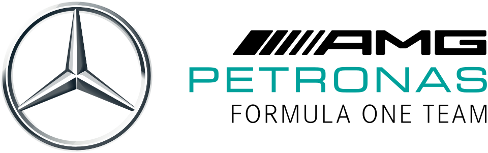
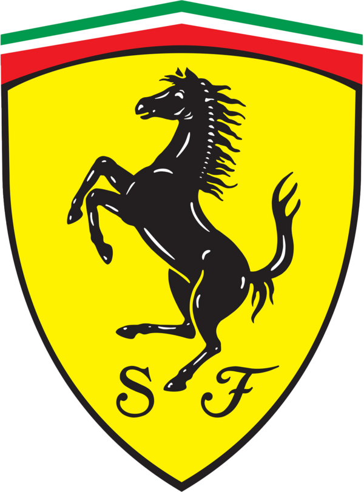
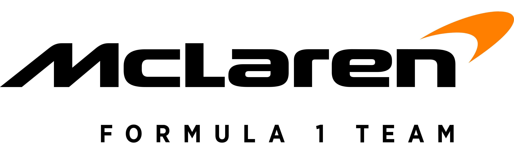
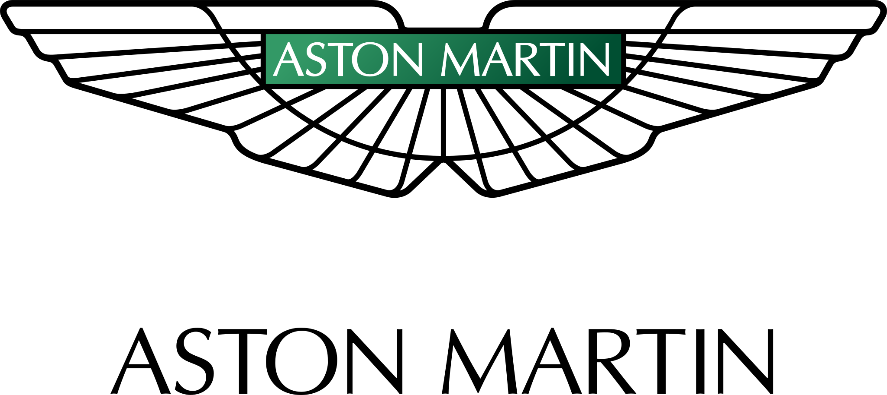

Mercedes-AMG Petronas
A Mercedes-Benz , a Mercedes-Benz Csoport német autómárkája , 1954 óta különböző időszakokban csapattulajdonosként és motorgyártóként is részt vesz a Forma-1- ben. A jelenlegi Mercedes-Benz Grand Prix Limited , amely Mercedes-AMG Petronas Formula One Team néven versenyez , székhelye az angliai Brackley- ben található , [ 6 ] és német versenylicenccel rendelkezik . [ 7 ] 2020 decemberében bejelentették, hogy az Ineos egyharmados, egyenlő részesedést kíván szerezni a Mercedes-Benz Csoporttal és a Toto Wolffal együtt ; [ 8 ] ez 2022. január 25-én lépett hatályba. [ 9 ] A Mercedes márkájú csapatokat gyakran az " Ezüst Nyilak " ( németül : Silberpfeile ) becenévvel illetik . A második világháború előtt a Mercedes-Benz az Európa-bajnokságon versenyzett , és három címet nyert. A márka 1954 -ben debütált a Formula–1-ben . Miután megnyerte első futamát az 1954-es Francia Nagydíjon , Juan Manuel Fangio további három nagydíjat nyert, ezzel megnyerve az 1954-es egyéni bajnokságot, és ezt a sikert 1955- ben megismételte. Annak ellenére, hogy két egyéni bajnokságot nyert, a Mercedes-Benz 1955 után kivonult az autóversenyzésből az 1955-ös Le Mans-i katasztrófára válaszul . A Mercedes 1994 -ben tért vissza a Forma-1-be motorgyártóként az Ilmorral , egy brit független, nagy teljesítményű autósport-mérnöki céggel együttműködve, amely fejlesztette a motorjaikat. A cég egy konstruktőri és három egyéni címet nyert a McLarennel kötött, 2009-ig tartó együttműködés keretében. 2005-ben az Ilmort Mercedes AMG High Performance Powertrains névre keresztelték át . 2010- ben a cég megvásárolta a Brawn GP csapatot, és Mercedesre nevezte át. A 2014-es jelentős szabályváltoztatás óta, amely turbófeltöltők és hibrid elektromos motorok használatát írta elő , a Mercedes a Forma-1 történetének egyik legsikeresebb csapatává vált, 2014 és 2020 között hét egymást követő egyéni, 2014 és 2021 között pedig nyolc egymást követő konstruktőri címet nyert – mindkét rekord. A gyártó több mint 200 győzelmet szerzett motorbeszállítóként, és a második helyen áll a Forma-1 történetében. Tizenkét konstruktőri és tizennégy egyéni bajnokságot nyertek Mercedes-Benz motorokkal.

Scuderia Ferrari
A Scuderia Ferrari olasz Formula–1-es versenycsapat, a sportág eddigi legsikeresebbje, a világbajnokság kezdete, 1950 óta jelen van a Formula–1-ben. Enzo Ferrari alapította 1929-ben (a Scuderia olaszul istállót jelent, a Ferrari az alapító Enzo Ferrari nevére utal), és 1939-ig az Alfa Romeo autóit versenyeztette. Csak később kezdtek saját autókat készíteni. A 2019-es szezonban a versenyzők a négyszeres világbajnok Sebastian Vettel, aki 2015 óta van a csapatnál, és a Saubertől érkező Charles Leclerc, aki Kimi Räikkönent váltotta. Maurizio Arriavebenét pedig, aki 2015 és 2018 közt volt csapatfőnök, Mattia Binotto váltotta. 2023-tól Frédéric Vasseur irányítja a csapatot Binotto helyett.2007-ben megnyerték az egyéni (Räikkönen) és a konstruktőri bajnoki címet is. Utóbbit 2008-ban megvédték, az egyéni címről viszont Felipe Massa a zárófutam utolsó körében lecsúszott. 2010-ben Fernando Alonso volt harcban a bajnoki címért, listavezetőként várta az utolsó versenyt, de a futam nem sikerült, így alulmaradt a Red Bull Racingnél versenyző Vettellel szemben. 2012-ben Alonso ismét a zárófutamig volt esélyes a címre, de ezúttal is Vettel nyerte a bajnokságot. 2014-ben gyenge szezont zárt a csapat, 1993 óta első ízben fordult elő, hogy egész évben nem sikerült futamot nyerniük. 2015-ben Vettel révén három futamot nyertek, a konstruktőri világbajnokságban második helyen zártak a Mercedes mögött. 2016-ban viszont megint nem tudtak futamgyőzelmet elérni, a konstruktőrök között visszacsúsztak a harmadik helyre a Red Bull mögé. 2017-ben a Ferrari a megelőző évekhez képest versenyképesebbnek bizonyult, Vettel sokáig esélyesnek tűnt a Mercedesszel szemben, de a szezon későbbi szakaszában túl sok pontot vesztett, ami miatt elszálltak a világbajnoki reményei. A 2018-as szezont még biztatóbban kezdte a Ferrari, de az év későbbi szakaszában ismét többször hibázott Vettel és a csapat, így ezúttal sem sikerült a világbajnoki cím megszerzése. 2019-ben a motort szabálytalannak minősítették, így 2020-ban jelentősen hátra csúsztak a mezőnyben. 2025-től a csapat pilótái: Lewis Hamilton és Charles Leclerc. A csapat legsikeresebb versenyzője a hétszeres világbajnok Michael Schumacher, aki öt egyéni bajnoki címet szerzett a Ferrarinak az összes tizenötből.

Red Bull Racing
A Red Bull Racing a Red Bull energiaital-gyár tulajdonában álló, osztrák Formula–1-es csapat. A cég másik csapata a RB Formula One Team (korábban Scuderia AlphaTauri). A csapat 2005-ben debütált az ausztrál nagydíjon. Jelenleg osztrák licensszel versenyeznek. 2010-2013 között négy egyéni és konstruktőri világbajnoki címet is nyertek Sebastian Vettellel. A 2014-től kezdődő turbókorszakban teljesítményük visszább esett, de végig ott voltak a legjobb három csapat között (kivétel 2015). 2021-ben és 2022-ben illetve 2023-ban Max Verstappen révén megszerezték az hetedik egyéni bajnoki címüket. 2013 után, 2022-ben és 2023-ban ismét világbajnok a csapat. Jelenlegi pilótafelállásukat a holland Max Verstappen, és a mexikói Sergio Pérez alkotja. 2025-től Pérez helyét Liam Lawson váltja, akit két forduló után Cunoda Júki követett a pilótaülésben. A csapat 2005-ben Cosworth, 2006-ban Ferrari, 2007–2018 között Renault, 2019–2021 között Honda, 2022-től pedig a saját gyártású Red Bull motorokkal versenyez. 2026-tól a Ford fogja ellátni motorokkal a csapatot. A csapat közvetlen jogelődjének az 1997-ben alapított Stewart Grand Prix nevezhető, melyet Jackie Stewart alapított. 1999 végén aztán eladta azt a Ford Motor Company-nek, ami Jaguar Racing néven versenyeztette. 2004-ben aztán a Ford úgy döntött, hogy eladja a sikertelen, de költséges csapatot. Azt Dietrich Mateschitz, a Red Bull energiaital-gyártó vállalat tulajdonosa vásárolta meg. A csapat így a 2005-ös ausztrál nagydíjon a Jaguar jogutódjaként ott állhatott a rajtvonalnál, immár a Red Bull energiaitalok kék-ezüst színeiben. A Red Bullnak nem volt ismeretlen az autósport királykategóriája, hiszen korábban szponzorként logójuk megtalálható volt a Sauber, az Arrows, valamint a jogelőd Jaguar autóin is. Miután saját csapatot indított, a Red Bull természetesen felbontotta a szerződését a Sauberrel (az Arrows már 2002-ben megszűnt). Az italgyártó cég emellett a Formula–3000-es versenysorozatban, és ennek utódjában, a GP2-ben is feltűnt, valamint van egy európai tehetségkutató-programja Red Bull Junior Team néven. Későbbi Formula–1-es versenyzők is kerültek ki a program növendékei közül; Enrique Bernoldi, Christian Klien, Patrick Friesacher, Vitantonio Liuzzi és Scott Speed is versenyzett már a királykategóriában.

McLaren
A McLaren Formula–1-es csapatot az új-zélandi Bruce McLaren alapította Bruce McLaren Motor Racing néven, saját maga versenyeztetésére. A csapat 1966-ban, a monacói nagydíjon debütált. Az alapító halála (1970) után Teddy Mayer vitte tovább az istállót, majd 1980 végén Ron Dennis vezetésével létrejött a McLaren International. A Formula–1 második legsikeresebb csapata 12 egyéni és kilenc konstruktőr-világbajnoki címével a Ferrari mögött. Legsikeresebb versenyzői Alain Prost és Ayrton Senna, akik három-három világbajnokságot nyertek a csapat színeiben. A csapat a Formula–1 mellett részt vett már az indianapolisi 500-ban és a Le Mans-i 24 órás autóversenyen is. 2009-ben az addig vezető pozíciót betöltő Ron Dennis visszavonult, helyét Martin Whitmarsh vette át. A 2013-as pocsék évet követően azonban Whitmarsht elbocsátották, helyére pedig ismét Ron Dennis került. 2015-től 2017-ig a csapat Honda-motorokat használt egy kizárólagos megállapodás keretein belül, 2016-ban pedig új tulajdonosi kör kezébe került a csapat, akik eltávolították Ron Dennist, a helyére pedig a csapatfőnöki tisztet betöltő Éric Boullier mellé igazgatóként Zak Brown érkezett. Jelenleg a McLaren motorpartnere a Mercedes. A pilótapárosukat Lando Norris és Oscar Piastri alkotja. Az első McLaren versenyautó a McLaren M1A volt 1964-ből. A Bruce McLaren Motor Racinget 1963-ban alapította az új-Zélandi Bruce McLaren, aki eredetileg sportautókat épített. A csapat 1966-ban debütált a Formula–1-ben, a monacói nagydíjon. A kezdeti motorbeszállító a Ford volt. A csapatnak első két szezonjában csak egy versenyzője volt, maga az alapító Bruce McLaren, aki az első versenyen olajszivárgás miatt kiesett. Legközelebb csak az amerikai nagydíjon vett részt, ahol azonban új motorral, a Serenissimával indult. A versenyen ötödik helyével a McLaren első pontjait szerezte. Az első szezonban a csapat két ponttal a kilencedik lett. Bruce McLaren 1969-ben a Nürburgringe. 1967-re a csapat új motorbeszállítója a BRM lett. McLaren az évben egyszer lett negyedik a monacói nagydíjon, és egyszer hetedik. A többi nagydíjon kiesett. A McLaren csapat három ponttal a tizedik lett a konstruktőri bajnokságban. 1968-ra Bruce McLaren csapattársa az előző évi világbajnok Denny Hulme lett, aki 1974-ig a csapat versenyzője maradt. A csapat ebben az évben visszatért a Ford-Cosworth motorokhoz, melyeket egészen 1983-ig használt. Hulme megnyerte az Olasz és a kanadai nagydíjat, míg McLaren a belga nagydíjat nyerte meg, amely a csapat első futamgyőzelme volt. Bruce emellett megnyerte az az évi Race of Champions-t, melyet Brands Hatchban rendeztek. A csapat 1968-tól több kiscsapatnak adott kasztnit. 1969-ben Bruce három dobogós helyével és 26 pontjával a harmadik helyen zárt az egyéni világbajnokságban. A csapat ötödik győzelmét azonban Hulme szerezte a mexikói nagydíjon. A csapat a negyedik helyen zárt a konstruktőri bajnokságban.

Aston Martin F1
Az Aston Martin először a DBR4-el, az első nyitott kerekű versenyautójával lépett be a Forma–1-be. A DBR4-et először 1957-ben építették és tesztelték, de csak 1959-ben debütált a Forma–1-ben. Ezt a késést az okozta, hogy a vállalat a DBR1-es sportautó fejlesztését helyezte előtérbe, amely végül megnyerte az 1959-es 24 órás Le Mans-i versenyt. A DBR4 világbajnoki debütálására a holland nagydíjon már elavulttá vált, és küzdött a tempóért versenytársaival szemben, Carroll Shelby és Roy Salvadori pedig a 10., illetve a 13. helyen végzett a 15-ből. Salvadori a korai körökben motorhiba miatt kiállt a versenyből, és Shelby autója is ugyanerre a sorsra jutott a verseny későbbi szakaszában. A csapat következő nevezése a brit nagydíjon érkezett, ahol Salvadori meglepett a kvalifikációval a 2. helyen. A verseny elején Shelby egyik gyújtásmágnese meghibásodott, ami rontott autója tempójában. A második elektromágnes a verseny végén meghibásodott, ami miatt feladta a versenyt. Salvadori csak a 6. helyet tudta megtartani, kevéssel a pontszerzéstől. A portugál nagydíjon mindkét autó elkerülte a problémákat, és a 6. és a 8. helyen végzett, de még mindig nem szereztek pontot. Az Aston Martin a szezon utolsó nevezése az olasz nagydíj volt, ahol mindkét autó tovább küzdött, és csak a 17. és a 19. helyen végzett. A verseny során Salvadori egészen a 7. helyen futott, mielőtt motorhibát szenvedett, míg Shelby a 10. helyen ért célba. Az autó jelentősen elavult volt a riválisaitól, és nem szerzett pontot. Az Aston Martin megépítette a DBR5-öt, hogy versenyezzen az 1960-as szezonban. A DBR5 az elődjén alapult, de könnyebb volt, és független felfüggesztéssel rendelkezett. Azonban az autó elöl nehéz motorral rendelkezett, és rendszeresen felülmúlták a hétköznapibb hátsó motoros autókat. A csapat idénybeli első nevezése a holland nagydíjon érkezett, de a DBR5 még nem állt készen a versenyre. Ennek eredményeként csak Salvadori indult a versenyen, a tartalék DBR4-gyel. Csak a 18. helyet szerezhette meg. Annak ellenére, hogy engedélyezték neki a versenyt, az Aston Martinnak azt mondták a versenyszervezők, hogy nem fizetnek. A csapat ezért nem volt hajlandó elindulni a versenyen. A DBR5-ösök készen álltak a csapat következő versenyére Nagy-Britanniában, amelyen Salvadori és Maurice Trintignant is részt vett. Salvadori kormányproblémákkal vonult vissza, Trintignant pedig csak a 11. helyen tudott célba érni, öt körrel lemaradva az éllovastól. A gyenge eredmények sorozatát követően, amikor a csapat egyetlen bajnoki pontot sem szerzett, az Aston Martin a brit nagydíj után teljesen felhagyott a Forma–1-gyel.